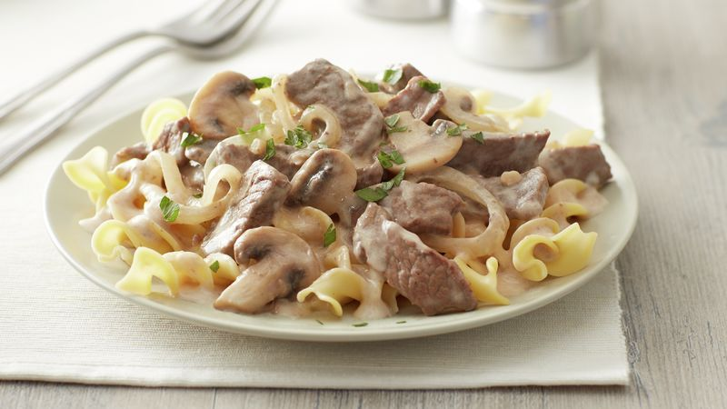

Beef Stroganoff

Description
Beef Stroganoff is a hearty dish hailing from Mother Russia. It combines mushrooms, beef, and noodles into a creamy pasta. I highly recommend this dish to anyone who is interested.
Ingredients
- 1 1/2 pounds beef sirloin
- 8 ounces fresh mushrooms
- 2 medium onions
- 1 garlic clove
- 1/4 cup butter
- 1/4 cup all-purpose flour
- 1 1/2 cups sour cream
- 3 cups hot cooked egg noddles
Steps
- Cut beef across grain into 1 1/2x1/2-inch strips
- Cook mushrooms, onions, and garlic in butter in 10-inch skillet over medium heat, stirring occasoinally, until onions are tender; remove from skillet.
- Cook beef in same skillet until brown. Heat to boiling; reduce heat. Cover and simmer for 15 minutes
- Stir remaining 1/2 cup broth into flour; stir into beef mixture. Add onion mixture; heat to boiling, stirring constantly. Boil and stir 1 minute. Stir in sour cream; heat until hot (do not boil). Serve over noodles.